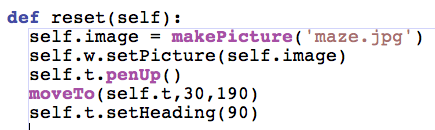
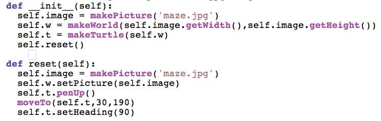
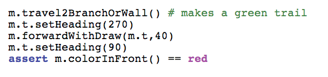

| The reset function is a duplicate of what we are doing in
__init__. Let's do some refactoring. |
 |
| Now with the call to reset in __init__ we no longer have as
much duplication. Duplication is one trigger for refactoring. At this
point, we still have our tests passing even after the refactoring. |
 |
| We
want the trail to turn to red after green to indicate that it is not a
solution path when we backtrack. Here's a test for that. |
 |